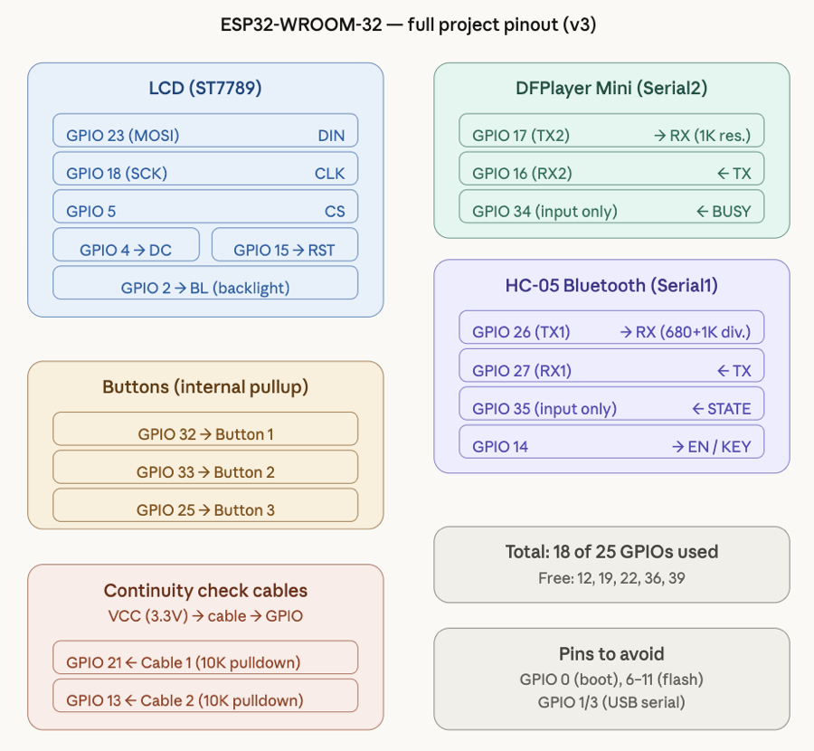

Flagship project · Team of three
SaveIt!
SaveIt is a CPR training system I built with two teammates: an AED-like enclosure wrapped around an instrumented manikin, giving trainees immediate feedback instead of waiting for an instructor to grade their compressions by hand. I owned the enclosure and the embedded path connecting the manikin’s sensors to a pair of ESP32s over Bluetooth.

- Context
- University of Pittsburgh
ECE 1885 - Timeline
- September 2024
to April 2025 - My role
- Enclosure + embedded
software engineer - Team
- Matthew Ketas
Caden Smith · Caden Empeys
How it works
Feedback from the physical world.
SaveIt uses an instrumented CPR manikin and an AED-like enclosure to turn a trainee’s physical actions into immediate device feedback. Getting that right meant a signal had to keep its meaning as it moved from a sensor, through a microcontroller interface, across Bluetooth, and into the response the trainee actually sees.
- 01Physical input
Manikin sensors capture CPR actions.
- 02Embedded interface
GPIO code acquires and interprets each sensor.
- 03Wireless link
Two ESP32s communicate over Bluetooth.
- 04Training response
The enclosure presents real-time feedback to the user.
Where I fit in
What I actually built.
My piece of SaveIt was the enclosure and the embedded software that ties the manikin to the ESP32s. I put together the bill of materials for the sensors we needed, then wrote the GPIO code for each one.
The enclosure
Designing the enclosure meant translating the training workflow into an actual physical layout — where the manikin connects, where the electronics sit, how a trainer opens it up. I used Fusion 360 for that part of the CAD work.
The embedded interfaces
On the firmware side, I connected individual sensors into the larger system: choosing pins, mapping peripherals, and getting Bluetooth communication working reliably between the two ESP32 devices.
The PCB
I wasn’t the primary PCB designer, but I verified and assisted with the board design in Altium so it actually matched the interfaces and components my firmware expected — catching mismatches before they became a soldering-iron problem.
How I know it works
Interfaces made explicit.
I kept the public repository as the source of truth for the electrical side of the project: ESP32 and ATmega328 pinouts, component connections, voltage-divider decisions, crystal configuration, and the exact commands used to flash each device. If anything here ever disagrees with the repo, trust the repo — that traceable link between the physical build and the code running it is the whole point.
Everything on this page is my documented piece of a three-person team project — work my teammates led stays credited to them. I’ll add more CAD renders and PCB layout imagery here once I have the original project exports on hand.